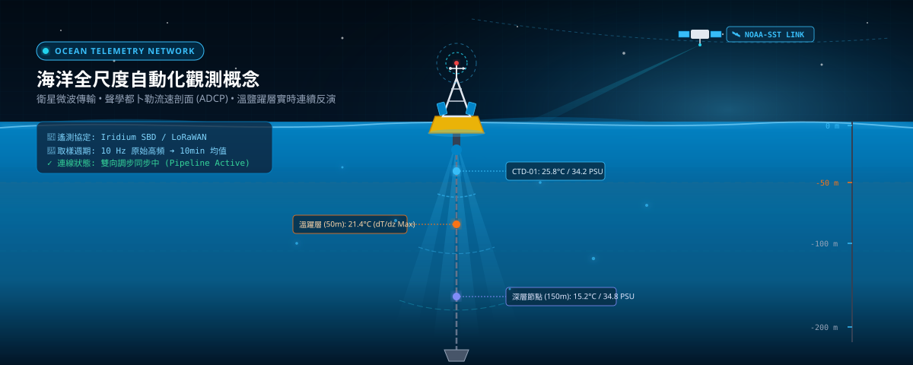

海洋全尺度立體觀測概念 (Ocean 3D Profiling)
即時遙測衛星鏈結 (Satellite Telemetry)
資料流自動化管線運作中 (Automated Pipeline Active)
Healthy
資料源：公開海洋浮標 API (NOAA / 氣象觀測開放資料) ➔ Python NumPy/SciPy 頻譜與濾波運算 ➔ 輸出 JSON ➔ 靜態 GitHub Pages 秒級載入
最後擷取：2026-09-23 11:00:00 UTC
取樣頻率：每 10 分鐘
海表水溫 (SST)
25.8
°C
+0.4°C 距平
氣候均值: 25.4°C
顯著波高 (Hs)
1.35
m
微浪 (Slight)
週期: 6.8s
海水鹽度 (Salinity)
34.35
PSU
適應生態正常
導電度: 52.1 mS
表層海流 (Current)
0.82
m/s (1.6 kt)
流向: NNE (28°)
黑潮支流
葉綠素 a (Chl-a)
0.48
mg/m³
中初級生產力
濁度: 0.8 NTU
即時潮位 (Tide)
+1.24
m
漲潮中 (Flood)
滿潮預報: 13:20
海域浮標測站分佈
點選測站圖標可切換監測數據
正常測站
偏暖警戒
投影: EPSG:3857 WGS84
海溫、波高與潮位時間序列 (72h 歷史與 24h 預報)
Python 統計滑動平均 (SMA-12) 與 Fourier 調和潮汐運算
水深垂直剖面分析 (CTD 溫鹽躍層 Profile)
深度 0 ~ 200m 水溫與鹽度垂直梯度運算 (Thermocline & Halocline)
海流與波浪流向分佈玫瑰圖 (Polar Current Rose)
16 方位流速頻率與波能量譜統計 (Directional Wave Energy Spectrum)
本網頁背後之自動化資料管線流程架構 (Automated Pipeline Execution Log)
1
公開資料擷取 (ETL)
透過 Python httpx / requests 自動請求海洋觀測 API 或 NOAA 衛星海溫 OISST 資料。
✓ Status: 200 OK (84.2 KB fetched)
2
數值與統計計算
NumPy / SciPy 進行高斯濾波去噪、JONSWAP 波能量譜計算與海溫距平異常值偵測。
✓ FFT 譜分析完成 (0.14s)
3
圖表數據 JSON 導出
將運算成果打包匯出成輕量化靜態 JSON (latest_ocean_metrics.json)，無需資料庫伺服器負擔。
✓ JSON 導出: output/ (34 KB)
4
靜態發布與前端展示
GitHub Actions 自動 Push 部署至 GitHub Pages / Cloudflare Pages，前端 ECharts 零延遲互動渲染。
✓ 靜態發布完成: CDN 已同步